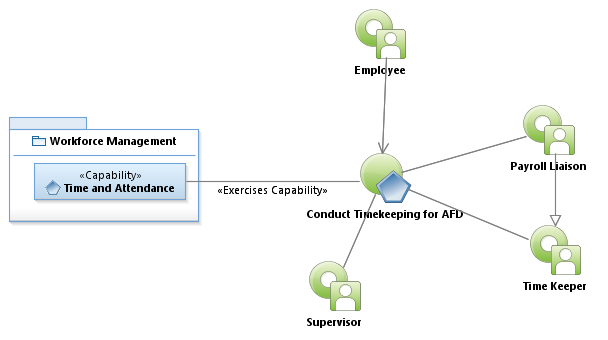
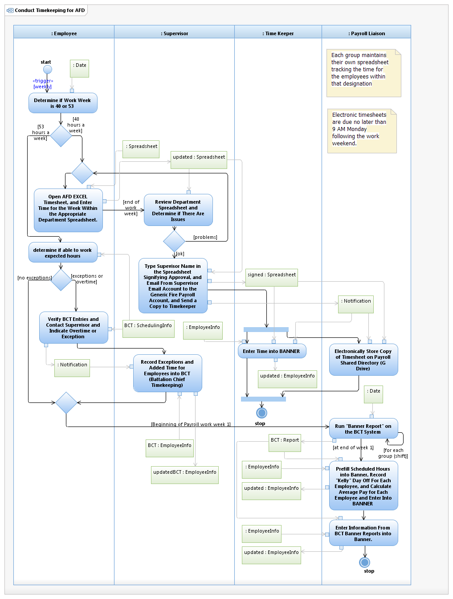

Use Case Model: Conduct Timekeeping for AFD
Architect: Aaron Brown, IT Enterprise Architect Senior
Date Last Modified: 4/10/2013
User Review: Carlyn Cheney
Date: 04/10/2013
Austin Fired Department uses a combination of exception based and standard timekeeping. There is a 19 day work cycle, and run 24 x 7 operations. They Run 24 on and 48 off in operations, and are considered essential employees.
Follow link to Role Definitions

Use Case Model: Conduct Timekeeping for AFD

Activity Model: Conduct Timekeeping for AFD
Activity Documentation
| Activity | Documentation |
|---|---|
| Run "Banner Reports" on the BCT System | This consists of the KELLY Report, REG Report, UNR (unscheduled hours), higher class report, oncall pay, Reimbursable time report, Wildfire, and Special events. |
Note: When the activity is self explanatory no documentation is provided.